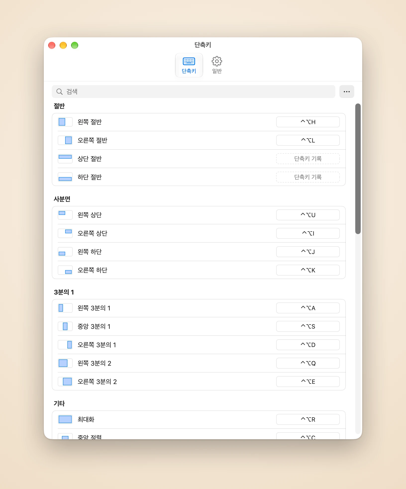

지금 쓰는 윈도우만 골라 배치
Piccolo는 마지막으로 사용한 윈도우를 기억합니다. 단축키 하나로 가장 최근의 윈도우 2개, 3개 또는 6개를 현재 디스플레이에 나란히 또는 격자로 배치하므로, 하나씩 고를 필요가 없습니다.
Piccolo는 방금 사용한 윈도우를 배치하고 키보드만으로 데스크탑을 깔끔하게 정리합니다.
14일 무료, 신용카드 필요 없음
US$4.99에 구입
Piccolo는 마지막으로 사용한 윈도우를 기억합니다. 단축키 하나로 가장 최근의 윈도우 2개, 3개 또는 6개를 현재 디스플레이에 나란히 또는 격자로 배치하므로, 하나씩 고를 필요가 없습니다.
Piccolo가 윈도우를 배치한 뒤에는 단축키로 포커스된 윈도우 옆의 구분선을 옮기면 이웃한 윈도우가 따라 움직여, 틈도 겹침도 생기지 않습니다. 윈도우 바꾸기는 두 윈도우의 자리를 맞바꾸고 레이아웃은 그대로 둡니다.
단축키를 누르고 있으면 목적지가 강조 표시됩니다. 손을 떼면 윈도우가 그곳으로 이동하고, Esc를 누르면 아무것도 바뀌지 않습니다.
다시 누르면 2/3, 한 번 더 누르면 1/3
⌃⌥H ⌃⌥L
모서리마다 키 하나씩
⌃⌥U ⌃⌥I ⌃⌥J ⌃⌥K
와이드 화면을 세 열로
⌃⌥A ⌃⌥S ⌃⌥D
메인 윈도우를 넓게
⌃⌥Q ⌃⌥E
화면 전체를 채움
⌃⌥R
크기는 그대로, 한가운데로
⌃⌥C
상대적인 크기와 위치는 그대로
⌃⌥[ ⌃⌥] ⌃⌥⌘ + 화살표
화면 그림 위에 직접 그리기
⌃⌥W
옮기기 전 자리로
⌃⌥⌫
설정에서 동작을 클릭하고 원하는 키를 누르기만 하면 됩니다. 격자와 사용자 설정 영역에도 각각 단축키를 지정할 수 있고, 고급 사용자는 구성 파일을 직접 편집할 수도 있습니다.

모든 동작을 하나의 목록에. 행을 클릭하고 키를 누르면 바로 저장됩니다. 어떤 변경이든 ⌘Z로 실행 취소할 수 있습니다.
윈도우가 부드럽게 제자리를 찾아가고, 더 갈 곳이 없으면 살짝 튕깁니다. 속도를 고르거나 끌 수 있습니다.
윈도우가 격자를 다 채우지 못할 때, 마지막 윈도우를 아래로 늘릴지 옆으로 늘릴지 고를 수 있습니다. 가로로 넓은 디스플레이에는 열 우선, 세로로 세운 디스플레이에는 행 우선.
윈도우 사이와 화면 가장자리에 간격을 두어, 그림자가 겹쳐 어두운 줄이 생기지 않게 합니다.
English, 简体中文, 繁體中文, 日本語, 한국어, Français, Español, Português, Deutsch.
계정도, 분석 도구도 없습니다. 인터넷에 연결하는 것은 사용권 확인과 업데이트 확인뿐입니다.
출시 기념 가격
US$4.99 한 번 구입 · 출시 기간 후 US$9.99
주문은 공식 판매자인 Dodo Payments가 처리하며, 결제와 세금, 청구서 발행을 맡습니다.
macOS 14 이상과 손쉬운 사용 권한이 필요합니다. Piccolo는 macOS 손쉬운 사용 API로 다른 앱의 윈도우를 이동하므로, 권한이 없으면 어떤 윈도우도 움직이지 않습니다.
Piccolo는 macOS 손쉬운 사용 API로 다른 앱의 윈도우를 이동하고 크기를 조절하며, 권한이 없으면 어떤 윈도우도 움직이지 않습니다. 이 권한은 윈도우의 위치와 크기를 읽고 바꾸는 데만 씁니다. 시스템 설정 > 개인정보 보호 및 보안 > 손쉬운 사용에서 허용할 수 있습니다.
호환성 기록에 측정한 macOS 릴리스마다 각 동작이 이런 윈도우에 무엇을 하는지, 단축키가 얼마나 걸리는지, Piccolo가 메모리를 얼마나 쓰는지 정리해 두었습니다.
그 밖의 데이터는 Mac 밖으로 나가지 않습니다. 분석 도구도, 충돌 보고도 없습니다. 윈도우, 단축키, 구성 파일은 모두 Mac에만 남습니다. 자세한 내용은 개인정보 처리방침(영어)을 참고하세요.
사용권 하나로 Mac 3대에서 사용할 수 있습니다.
사용권을 해제할 Mac에서 설정을 열고, 일반에서 ‘이 Mac에서 비활성화’를 선택하세요. 그런 다음 다른 Mac에서 사용권을 활성화하면 됩니다.
구입 후 30일 이내라면 이유를 묻지 않고 환불해 드립니다. 주문 번호와 함께 support@damao.io로 이메일을 보내 주세요. 자세한 내용은 환불 정책(영어)을 참고하세요.